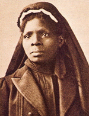

|

|

|
|
|
Teacher, nurse and author, Susie Baker King Taylor was born a slave
in Georgia on August 5, 1848. Her parents, Hagar Ann Reed and Raymond
Baker were both highly regarded by their owners, and given privileges
that benefited their daughter's future. At seven, Susie was sent to live
with her grandmother in Savannah, where she learned to sew, and more
importantly, to read and write. An avid student, Taylor continued her
studies up to the outbreak of the war in 1861. Passionate in her
conviction that slavery was about to end, the fourteen-year-old fled
Savannah for freedom with her uncle's family, and found refuge on St.
Simon's Island off the Georgia coast and under Union control.
Susie Taylor joined the small but dedicated contingent of northern
missionaries, teachers, and abolitionist soldiers who were part of an
exciting experiment to educate and prepare the freed people for their
expected transition to freedom. Located on several of the sea-islands
off the coast of South Carolina and Georgia, this "rehearsal for
reconstruction" anticipated many of the challenges and disappointments
that lay in store for ex-slaves. Taylor was quickly hired as a
schoolteacher and she taught during the day for children and at night
for the adults. Exhausted but exhilarated by her work, Susie did not
want to leave in the fall of 1862 when for safety reasons the Federals
ordered that island civilians be removed to Camp Saxton in Beaufort,
South Carolina.
In Beaufort, Taylor worked as a laundress for Company E of the famous
1st South Carolina Volunteers (later the 33rd U.S. Colored Infantry).
The unit was the first authorized Union regiment of African American
soldiers. She met and married one of the regiment's soldiers, Sergeant
Edward King, sometime in 1862. Proud to be a part of an African-American
unit fighting for freedom and equality, Taylor remained with the
regiment throughout the war. She served as a laundress and cook, but her
most important roles were those of nurse and teacher. The regiment's
soldiers, that included a number of her uncles and cousins, cherished
their teen-aged "angel of mercy" and she returned their devotion in
full. Taylor never received any wages for her work, nor was she eligible
for a pension in later years. She did receive a widow's pension of
$100.00 dollars after her husband's death.
After the war, Taylor and her husband settled in Savannah, where she
opened a school for African American children. Due to the extreme racial
prejudice that existed in the country at this time, Edward King could
not make a living as a carpenter, but found a job as a longshoreman. In
September of 1866, he was killed in a work-related accident, leaving a
pregnant wife. After the birth of their son, Taylor tried unsuccessfully
to continue her work in education. After a couple of failed attempts to
run schools, she took a job as a laundress and cook for a wealthy
couple. In the early 1870s, Taylor determined that she wished to live in
Boston, Massachusetts, where she moved to in 1874. A few years later she
remarried to Russell B. Taylor.
Susie King Taylor spent the last two decades of her life working for
veterans' rights and benefits. In the 1880s she helped to found the
Corps Sixty-Seven of the Boston branch of the Women's Relief Corps, the
auxiliary to the Grand Army of the Republic. The G.A.R. was a political
and social organization for ex-Civil War soldiers, and had many
"colored" units. Taylor, who worked as treasurer, and in 1893, was
president of the Corps, agitated for the fair treatment of African
American veterans. Tragedy struck Taylor again in 1898 when her son died
in Shreveport, Louisiana.
Disappointed by the lack of progress made by her people since the
Civil War, Taylor blamed the racism of the white people in the United
States. In 1902 Taylor published her autobiography, which focused on her
war experiences. Entitled Reminiscences of My Life in Camp, it is the
only Civil War memoir written by an African-American woman. Taylor died
in Boston on October 6, 1912.
Source: Joan Waugh, ed., Facts on File Encyclopedia of American
History: Civil War and Reconstruction, 1856 to 1869 (New York: Facts on
File, 2003), 350.
|